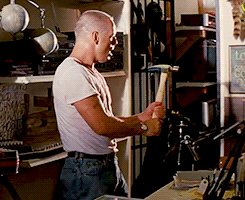
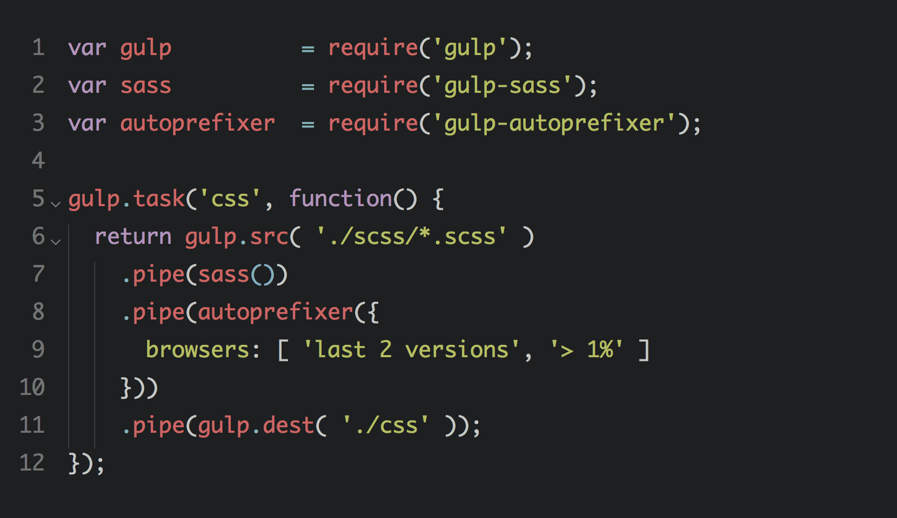
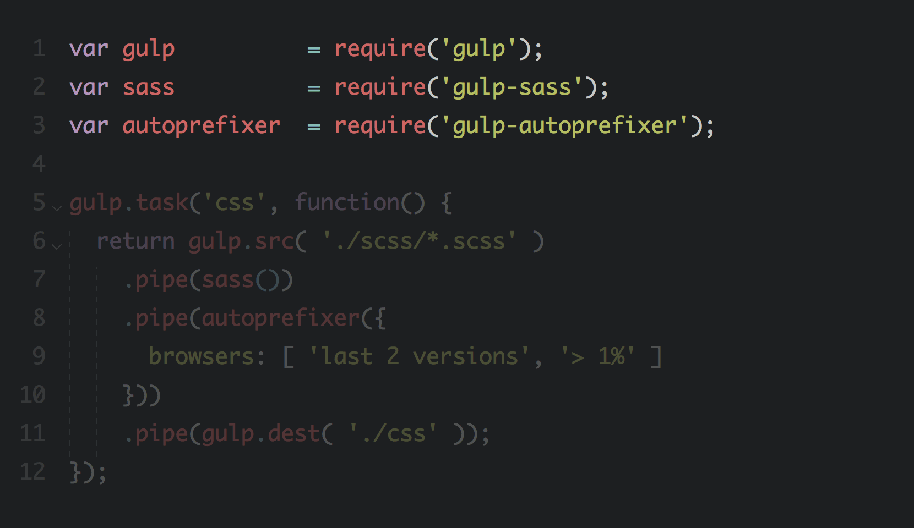
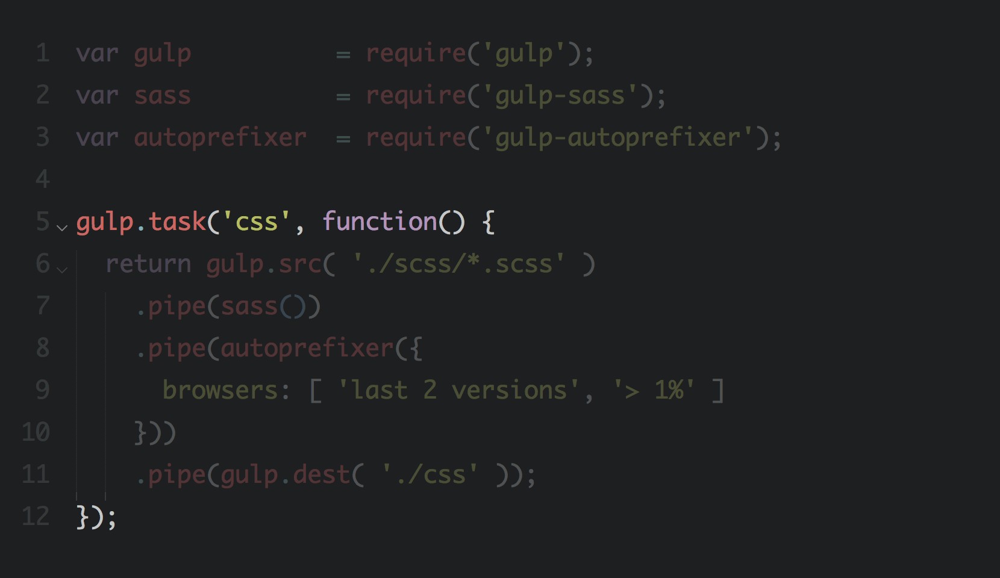
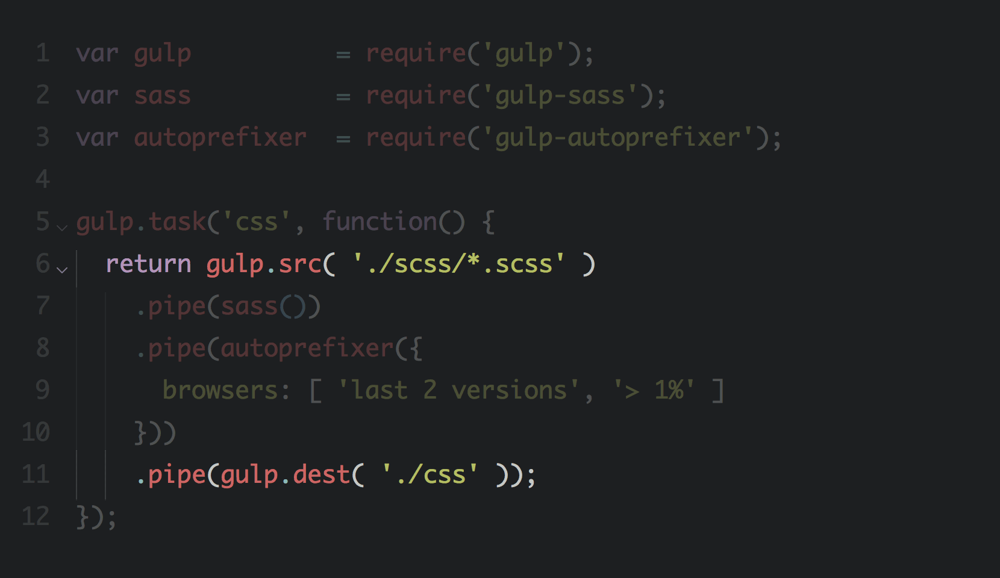
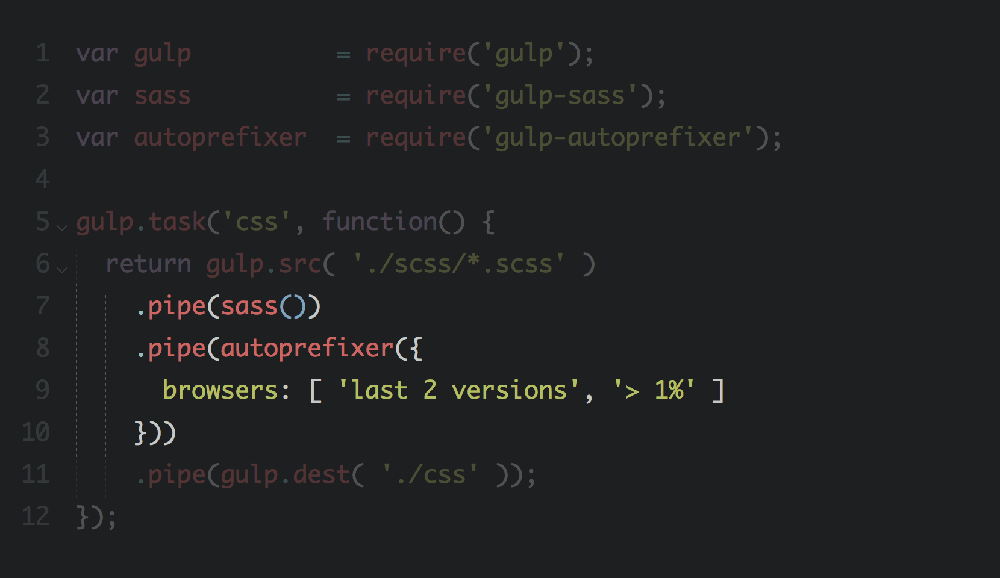
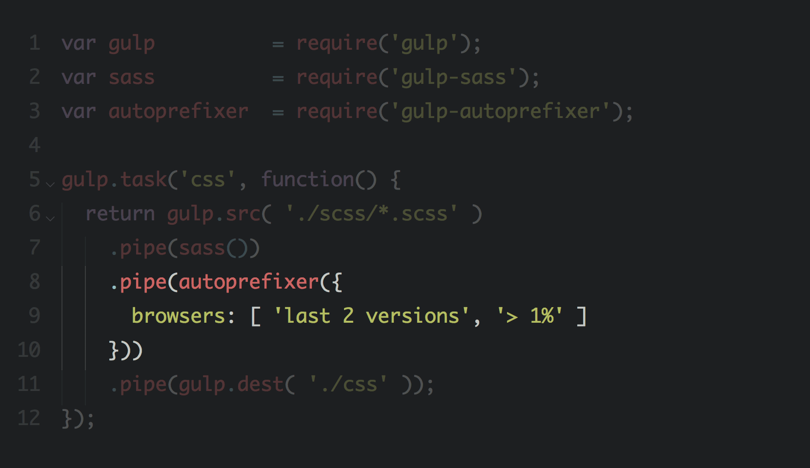

Gulp Fiction
por Nahuel Sotelo
Hola, soy Nahuel Sotelo
Frontend developer en Schibsted Spain y Profesor de la asignatura Programación Frontend en el Master de Diseño Web de Bau.
Task runners:
Dejemos que la máquina haga el trabajo sucio.
¿Por qué Gulp?
¿Por qué no?
Lo importante NO es la herramienta.

Es el workflow.
Mejorar el workflow
1. Primero lo necesito, luego lo busco.
Los task runners son una herramientas, no el objetivo.
2. Tiene que ser rápido
Tres tipos de tareas: On save, On build, On demand.
3. Tener un plan B
Poder seguir adelante si algún task falla.
Gulp 101
Setup
- Instalar node
npm install -g gulp- En el proyecto crear:
package.json, para las dependenciasgulpfile.js, para configurar los tasks
- Instalar y configurar tasks






¡Slides de código!
Links relacionados:
-
Gulp.js
http://gulpjs.com/ -
Introduction to Gulp.js — Stefan Imhoff
http://stefanimhoff.de/2014/gulp-tutorial-1-intro-setup/ -
Essential Plugins for Gulp — Ilya Pestov
http://ipestov.com/essential-plugins-for-gulp/ -
Automating Front-end Workflow — Addy Osmani
https://speakerdeck.com/addyosmani/automating-front-end-workflow
¡Gracias!

Preguntas, dudas, comentarios a hola@nahuelsotelo.com